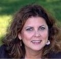
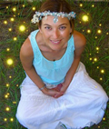

Clearings, Healings & Readings at Universal Visions
Please call to schedule an appointment: 978-462-4649. To reserve your time, we require prepayment via a credit card, or we can request the required prepayment via PayPal using your email address
Brad Pritchard offers various clearings, healings and readings in the shop or over the phone
Readings include Akashic Record readings, Tarot and Oracle Cards, and Past Life Regressions. Healings include Shamanic Healings, with Chakra and Aura Clearing and Restructuring. Brad can also perform spiritual counseling.
Current Healng & Reading Offerings
 Allison Ahearn is Offering Astrology Readings
Allison Ahearn is Offering Astrology Readings
Allison uses a unique combination of astrology, intuition and mediumship to help her clients gain clarity in areas such as career path, relationship compatibility and self-understanding. Please provide us with your birth information when making an appointment: birth date, place and time (time of birth is usually found on one's birth certificate).
Susan Morgan is offering readings Tuesday, July 16, 2013, 1 to 4 pm
Date: Tuesday, July 16, 2013
Price: $35 for 15 minutes, $70 for 30 minutes
Time: 1-4 pm
Preregistration is requested. Please phone 978-462-4649
Susan Morgan, author of The Power of Dreams, is an intuitive, psychometrist, certified as a Dream Teacher, a Shamanic Practitioner, a Soul Recovery Practitioner an Advanced Reiki Practitioner, visual artist, writer and host of the TV show: The Mystic Dream Center. She is Native American and the founder of the Mystic Dream Center, and teaches dreamwork skills to both individuals and groups. Please visit http://mysticdreamcenter.com/ for more info.
Ariana DeLituanie will do Tarot readings on Thursdays
From first time seekers to those familiar with receiving Tarot readings, Ariana DeLituanie provides a personal and uniquely tailored reading to offer guidance to your specific questions. Whether stuck in a financial rut, seeking romance or personal insight, or looking for peace after a loved one's passing, the Tarot offers wisdom and foresight backed by centuries of tradition.
Studying the Tarot from a young age, Ariana hopes to provide a unique experience to all clients. Please call Universal Visions for more information: 978-462-4649.
Jessica (Arael) Marrocco, Akashic Record Reader, Past Life Regressionist, Psychic / Intuitive, Medium, Life Coach, Meditation Teacher, Storyteller and inspired writer for children and adults
Jessica has been a student of western and eastern religions for over 20 years. She is a psychic /intuitive who experiences modes of clairvoyance, clairaudience and past-life information; all of which are instrumental in creating an experience of karmic clearing and growth.
-
Certified Akashic Record Reader
-
Certified Past Life Regressionist (Dolores Cannon Quantum Healing Process)
-
Certified Lemurian Healer
-
Certifed Reiki practitioner
-
Celtic Shamanic work
-
Native American spirit clearing
-
Drumming sessions for shamanic journeys
Jessica also works with native spirits. She participated in a Sundance at Pine Ridge, South Dakota with the Lakota, and trained with a Lakota Medicine Man. She can do a spirit food ceremony or work with native spirits. More information >
Laura Haley, Energy Healer and Spiritual Counselor
Laura is a compassionate and insightful healer who can help you relieve stress, improve your physical and emotional health, experience a state of well being, and connect you with the real you. She will utilize Reiki and other forms of energy healing to clear, recharge, and balance your energy centers, removing blocks that prevent you from living the healthy and happy life you truly desire. For those who wish to learn techniques that they can use at home, she also offers spiritual counseling. Laura is a Certified Usui Reiki Master/Teacher, an Integrated Energy Therapy (IET) Practitioner, a Magnified Healing Teacher, a Lightarian Angel Link Facilitator, and a member of the International Center for Reiki Training. For more information or to schedule an appointment, please visit her website
Meagan Rae presents Energy Healing
 Meagan will utilize her years of training in energy healing to help you reach your highest potential in what you seek most in life. Whether it may be improved health or peace of mind, Meagan can help you achieve your utmost desired destiny. She will accomplish this by working with the Auric field and chakras to remove blocks of unwanted energy.
Meagan will utilize her years of training in energy healing to help you reach your highest potential in what you seek most in life. Whether it may be improved health or peace of mind, Meagan can help you achieve your utmost desired destiny. She will accomplish this by working with the Auric field and chakras to remove blocks of unwanted energy.
Meagan is a Usui Reiki Master, Lightarian Reiki Practitioner, Shaman, Crystal Energy Practitioner, Aura Spray Practitioner, and a member of the International Association for Reiki Practitioners. Please call 978-479-0649 to schedule an appointment website
Ryan Long presents Our Natural Companions
Have you ever experienced an unidentifiable connection with an animal either for a brief moment or an entire lifetime? We are of nature at our source. Unfortunately, we have been domesticated, to a degree, removed from our deep connection and understanding of the natural world. However, the natural world has not given up on us. We are constantly sent messages, guidance and offerings of companionship by birds, trees, four legged animals, and insects that live just outside the “safety” of our front door.
Have you been visited by an animal, be it four legged or winged, where there was a feeling of “out of the ordinary” or even “strangely familiar”? Possibly, noticing an animal multiple times in a day or have you been stopped dead in your tracks driving down the road? If that’s not an attempt of trying to get your attention then what is?
This is no accident, coincidence or chance encounter. There is important information regarding your life right here in this moment just waiting to be acknowledged.
Through expanding your awareness, slowing down, opening your heart and tapping into that seat of primal connection that flows in all of us you have the ability to gain greater clarity, confidence, trust, compassion and power in your own path and the direction you choose. This is available for people of all levels of involvement in a deeper connection with their true selves.
Benefit from greater levels of…
* Clarity
* Trust
* Confidence
* Inner strength
* Joy
* Closure
* Incite
* Companionship
* Motivation
* Peace
Ryan is a lifelong resident of the area and spends a great deal of his time along the various landscapes this beautiful nook has to offer. Ryan is trained in Polarity Therapy at an RPP level and also is a certified personal trainer. His deepened connection with spirit and the universe began in his early twenties through the exact avenue he offers to share with you.
“The world I lived in simply didn’t work anymore, if it ever did. I felt upside down, helpless and unmotivated. At almost that exact time a new door opened for me and I began feeling an overwhelming connection and attraction to nature. As if there was an entirely different force or depth to it. Life began to glow and this was perpetuated by my numerous encounters with Red Tailed Hawk. I began researching and asking questions and before I knew it I gained a new form of communication and insight into my life. I no longer felt like a one man show, I was part of a team or tribe. My life began to make sense, I had direction, and confidence in my action.”
Please call Universal Visions for more information: 978-462-4649
ADDITIONAL PREVIOUS Healing & Reading Sessions/Workshops (may be scheduled in the future)
Healing Meditations for you and the Planet in 2013 with Anastasia Papanikolaou
Based on Diana Cooper's books and meditations we will:
- Create and hold Sacred Space for ourselves, others and the expansion of the planet
- Use silent Prayers to our ... en "LIGHT" en ment
- Honor our Ancestors and work with them to raise the vibration of the planet
- Invite more Love and Light to ourselves and all beings
All that is needed is your open mind and heart. Optional things you may wish to bring along with you: prayers, an object to place on our altar, yoga mat, pillow, and/or blanket if you wish to lie down during the meditation portion, a journal and pen. These suggestions are all optional, none are necessary to bring to attend these classes.
For a complete bio and more information on Anastasia Papanikolaou, please visit her website at http://www.onecosmicheart.net/
For any questions regarding this class, please contact Anastasia at 978-509-8826 or Anastasia.onecosmicheart@yahoo.com
Dates: Mondays, April 8 and 22 and May 6 and 20, 2013
This is not a series. Come as much or as little as you like
Price: $20.00 per class
Time: 7-9 pm
Location: Universal Visions Classroom Space located just 1/4 of a mile down the road from the store, at 96 Newburyport Turnpike (Rte 1), Newbury, MA (same plaza as Gallant's pool place and Consigli Granite and Marble Creations)
Pre-registration is required. Walk-ins welcome if class is definitely running, which is dependent on sufficient participants. Please secure your seat by registering with Universal Visions at 978-462-4649.
Ascension Support Class presented by Anastasia Papanikolaou
We are in a time of great change and transformation on Planet Earth.
Mother Earth is increasing her vibration and as a result, so are we.
-
Are you feeling the changes Mother Earth is going through?
-
Are you feeling more tired than usual? more anxious?
-
Experiencing an increase or decrease in appetite? heart palpitations, shortness of breathe?
-
Any other physical, emotional or even psychic symptoms that are new to you?
-
Are you curious about the shifts the planet is undergoing?
If you are feeling any of the above symptoms or perhaps some others, this workshop will
serve as a support system for you You are NOT Alone. This class is also open to anyone
curious about this process and this time on Earth.
For a complete bio and more information on Anastasia Papanikolaou, please visit her website at http://www.onecosmicheart.net/
For any questions regarding this class, please contact Anastasia at 978-509-8826 or Anastasia.onecosmicheart@yahoo.com
Date: Wednesday, 2/20/2013
Price: $25.00
Time: 7-9 pm
Location: Universal Visions Classroom Space located just 1/4 of a mile down the road from the
store, at 96 Newburyport Turnpike (Rte 1), Newbury, MA (same plaza as Gallant's pool
place and Consigli Granite and Marble Creations)
Pre-registration is required. Walk-ins welcome if class is definitely running, which is dependent on sufficient participants. Please secure your seat by registering with Universal Visions at
978-462-4649.
Danielle Federico of The Spirit Within
 Join Danielle for a workshop that will consist of healing, meditation and direction on how to connect to the Divine light and energies of the Ascended Masters and Angels. She will also help you further your meditation practice through guided meditation, breath work and mantras. Come and relax in the Divine Energies that will be introduced to the group and find your own personal spirit within. For this particular workshop, Danielle will also be offering healing to each one of you while you are in your meditative state. This extra healing will help to enhance your meditation experience and to help connect you to the beautiful energies that are awaiting you. A group exercise will be a part of the evening’s experience. {Please bring a blanket and/or yoga mat for this workshop as well as a notebook and pen.}
Join Danielle for a workshop that will consist of healing, meditation and direction on how to connect to the Divine light and energies of the Ascended Masters and Angels. She will also help you further your meditation practice through guided meditation, breath work and mantras. Come and relax in the Divine Energies that will be introduced to the group and find your own personal spirit within. For this particular workshop, Danielle will also be offering healing to each one of you while you are in your meditative state. This extra healing will help to enhance your meditation experience and to help connect you to the beautiful energies that are awaiting you. A group exercise will be a part of the evening’s experience. {Please bring a blanket and/or yoga mat for this workshop as well as a notebook and pen.}
This is an all level workshop and we will be meeting monthly. For a complete bio and more information on Danielle Federico, please visit her website.
Amy Leigh Mercree presents:
"Fairy Class: Connect and Heal with the Fairy Realm"
An experiential and informational workshop for everyone. Learn new techniques to align with healing from the elemental kingdoms. Learn to use your intuition to trace your ancestry through spirit and body back to the primordial realm of pure energy and Fairy Dreaming. Open your mind & soul to the heart centered healing of our elemental ancestors. Have you ever wondered if you might have a connection to the Fairy realm or if you are descended from Fairy beings? Come find out surprising and exciting answers that explain some of humanity’s original DNA & strengthen your connection to the natural world.
- Meet Your Personal Fairy Guides
- Design Movements To Express Your Star Fairy DNA
- Explore How You Can Share Your Gifts With Our Planet With The Help of Your Fairy Ancestors
Teacher Amy Leigh Mercree is a gifted healer, shaman, medical intuitive, psychic, author, blogger and Conscious Dating Coach. Amy is also the Keynote Speaker at this year’s Whole Health Expo in Northampton, MA (April 2012).
Deb Silke, High Frequency Intuitive Reader presents "The Intuitive in You!": A Special Workshop
Ever think you have intuitive abilities and then think “No, not me, it’s all just a coincidence”? Intuition is not a realm reserved for just a special few. As sentient beings we all have innate intuitive abilities. However our willingness to look at our ideas about our reality have everything to do with whether or not we are willing to step up and energize not just our intuition, but all our innate abilities. In this workshop we will explore how your picture of reality affects what your intuition feels like, looks like, sounds like and how you can tune into it with more frequency and ease.
Deb Silke can be reached at 978-902-7001 and DebSilke@AncientWisdomSRC.com
 Sheila Ann Enos, Spiritual Consultant
Sheila Ann Enos, Spiritual Consultant
Workshops will concentrate on Exploring Inner Dynamics.
Sheila has been involved in spiritual dynamics for approximately 30 years. She shares insights into individuals and the relationships they have with themselves. On subsequent nights, she helps people to access their feelings. There are 7 techniques to help with knowing "what is me and not me". Sheila also does course workshops, and reveals profiles to help participants talk to their angels, and remove blocks.
There is more information at www.ALCWORLD.COM and www.ipminternational.org, a sister programs.